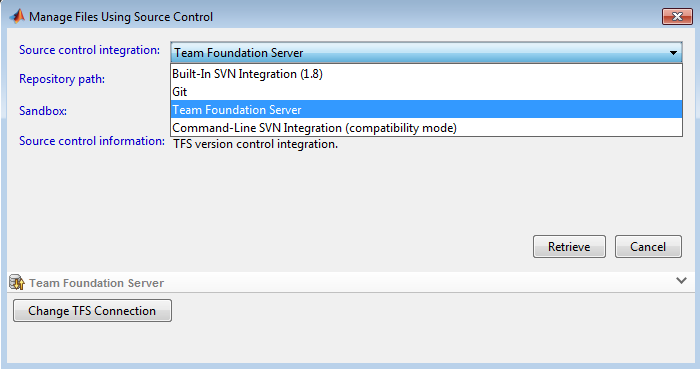

This app provides an integration between MATLAB and Team Foundation Server (TFS).
To use this app, you must perform the following configuration steps.
Run the following command at the command prompt:
>> installTFS
You will be prompted for your default TFS URL. The URL must include the
project collection (ex: http://MyTfsServer:8080/tfs/DefaultCollection).
You will also be asked whether you're using an on-premise TFS server with
Windows auth. If you are, then MATLAB will connect to TFS automatically.
Otherwise, you will be prompted for login credentials.
Restart MATLAB after running the configuration script installTFS.
When you navigate to a TFS Workspace directory, MATLAB will automatically detect that it is a TFS Workspace and display TFS status icons. Note that it may take a few seconds for the status icons to appear while MATLAB connects to TFS for the first time. You can also select a file, right click, and look under the "Source Control" menu to find various source control operations that can be performed.
Note: some newer format TFS workspaces might not be correctly detected. You can work around this issue by creating a workspace using the MATLAB integration. The next section of the document describes how to do this.
If you want to change the TFS project collection you're connected to, you can right click inside MATLAB's "Current Folder" tool and select the context menu "Source Control -> Connect to TFS."
If you want to change your default TFS project collection URL,
run the storeTfsSettings.m MATLAB function and restart MATLAB.
>> storeTfsSettings
In MATLAB's Current Folder browser navigate to the folder where you want to create the workspace.
Right click in the Current Folder browser and select the context menu "Source Control"->"Manage Files".
Select Team Foundation Server in the Source control integration dropdown.
For the repository path, enter the source location on the TFS Server (ex: $/MyProject/Src/Main).
Enter the local directory where you'd like to download the files.
Click the Retrieve button.
Navigate to the app directory and run the following command: uninstallTFS This will remove all configuration information stored with the app.
Restart MATLAB.
Now uninstall the app: In the MATLAB APPS toolbar, select the TFS Integration App right click and select "Uninstall".
The TFS Java SDK uses an older version of the TFS APIs than Visual Studio. Workspaces you create with the Java SDK are usable in Visual Studio, but Workspaces created in Visual Studio have inconsistent behavior with the SDK. For the best experience, you should create a new Workspace using MATLAB.